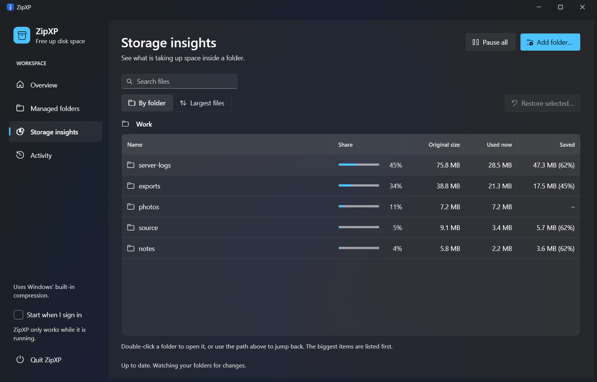
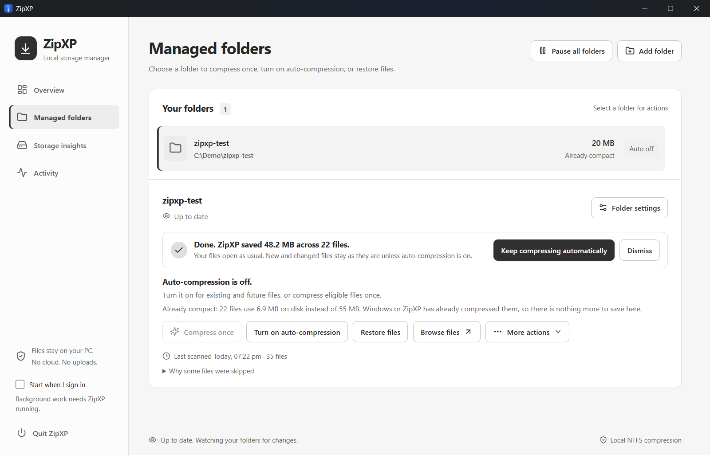

ZipXP shrinks the files in the folders you pick, in place, using Windows' built-in NTFS compression.
No archives, no renames, nothing deleted. Each successful change is measured, and Restore original size decompresses them again.
Find out where the space went, decide which folders ZipXP may touch, and let a single, polite background worker handle the rest. You get the measured results.
Projects38.2 GiB
Downloads14.9 GiB
Footage11.4 GiB
Logs6.1 GiB
Other3.8 GiB
01 · Analyze
See it before you change it
Adding a folder starts a read-only analysis. Nothing is compressed until you say so.
Largest files and folders, with drill-down
Opportunity estimate from sampled Deflate
Unknown sizes show a dash, never a fake zero
vendor\sdk.dll
exports\sales-export-14.csv
logs\server-2026-11.log
datasets\events.csv
02 · Automate
Policies, not chores
Turn on automatic compression per folder. New, copied, replaced and changed files are picked up on their own.
Exclusions, size and benefit thresholds
Quiet period, cooldown and schedules
Battery, CPU and free-space gates
03 · Account
Measured, not guessed
Each successful, measurable operation records its signed before-and-after allocation once, in a daily ledger kept apart from estimates.
Signed before − after allocations
Decompression growth counts as negative
Ledger survives history pruning and restarts
The real app
Plain words. Real numbers.
These screenshots come from the actual app, taken after its own engine compressed a generated test folder of text, logs, CSV and JSON, plus random data and a ZIP that are left alone. Your savings will differ.
How much space your folders use, and how much ZipXP has saved.

Text, logs, CSV and JSON shrink by 85% or more here. Random data wouldn't save space, so ZipXP leaves it alone.

Each folder has its own policy, status and last scan.
How it works
Six steps. You do three.
Add, review, decide. ZipXP keeps doing the rest from the tray while it's running, even with the window closed.
Add a folder
Pick a local fixed NTFS folder like C:\Users\you\Projects. Overlapping roots are rejected up front.
Read-only analysis
Allocation totals, candidate bytes, largest files, and how many directories already carry Windows' own compression flag.
Set a policy
Turn on automation, choose subfolders and battery behavior. Advanced options hold thresholds, schedule and reserve.
Queue
Eligible files join one persistent, sequential queue. File-system notifications keep it current, and a 30-minute reconciliation scan catches anything they miss.
Compress
One file at a time, below-normal priority, through a validated native handle. Busy files retry with backoff.
Measure
Actual allocation is read back from the same handle. Poor-benefit files are cached and left alone until their content changes.
Try it: policy gates
Polite by design. Flip a switch and watch it wait.
Gates are checked between operations, so the worker won't start a new file while a condition says wait. Toggle them below to watch the simulated queue respond.
Conditions right now
Turn a condition on to make the worker wait.
Background worker
RunningOne file at a time, below-normal priority.
Processed 0 · Measured 0.0 MiB
Careful by default
Every file passes five steps, start to finish.
Compression is a filesystem attribute, not a rewrite into some other format. ZipXP still treats every operation as risky: it pins the file, proves the file is the same one it scanned, and checks the result. That makes races much less likely, but it isn't a guarantee against every concurrent change, so start with copies.
01
Pin the handle
Open one handle to the original with no write or delete sharing.
02
Prove identity
Resolved path and stable FILE_ID_INFO must match the scan.
03
Validate metadata
Length and last-write time are re-checked fresh. Changed files wait for a rescan.
04
Compress natively
FSCTL_SET_COMPRESSION on that same handle. One file at a time.
05
Read it back
Actual state and allocation are read from the handle and written to the ledger exactly once.
What it will never touch
Some files are excluded from changes outright, and a few kinds of location are refused altogether. ZipXP can't read a file's size or attributes? It shows an error. It doesn't count that file as zero.
File types never changedLocations refused
Hidden & system filesEncrypted (EFS)Sparse filesOffline / cloud recallRead-only filesMultiple hard linksReparse points & junctionsDrive rootsWindows & Program FilesUNC & network pathsWSL filesystemsIts own database
Still to do before 1.0
Compatibility testing across cluster sizes, hardware, permissions, antivirus and backup tools
Repeated CPU, I/O and open/save latency measurements on real workloads
A release signing certificate and a signed, timestamped package
Sign-out, restart and sign-in checks of the optional startup entry
A real user pilot, an accessibility review, and install/update recovery on more machines
Most “space saved” counters mix guesses with facts. ZipXP keeps what the drive reports, what it scanned, what it estimates, and what it actually measured in four separate places.
A
Volume usage
Live drive statistics. Includes activity from every other app, so it moves on its own.
DriveInfo · live, all apps
B
Managed allocation
Primary-stream allocation from each root's latest scan, with its timestamp and how much coverage is unknown.
Σ allocated · hard links once
C
Estimated opportunity
Three 32 KiB Deflate samples per eligible file, scaled up. A heuristic, clearly labeled. Sampling never modifies anything.
3 × 32 KiB samples → scale
D
Net measured reduction
Signed difference for successful operations with stable identity. Zero is valid. Decompression is negative.
Σ (before − after) allocation
No marketing math. The measured reduction is a running total of past operations. It doesn't claim that much free space exists right now, and it doesn't claim savings still remain after you delete files. Already-compressed, interrupted, or unmeasured jobs add nothing. Known issue: after a restore, growth can be measured before the file handle closes, which overstates it for some file sizes and can show a small negative total. Your files aren't affected. Tracked in #2. A fix (#4) is merged on a branch but hasn't reached main yet.
68native and core checks passing on a real NTFS volume
0external NuGet or UI packages. SQLite comes from Windows itself.
1sequential worker per user, with no service and no elevation
4app screens launched and navigated by native UI Automation in the checks
For developers
Build it, run it, ship it.
Clone it and run it with the .NET 10 SDK, launch it from WSL with the Windows SDK, or publish a self-contained x64 package that needs no separate .NET runtime.
One-line dev loop--fresh, --rebuild and --reset flags. Ctrl+C asks the app to quit cleanly.
Real-filesystem checksReal compression, hashes, locks, hard links and replacements, plus UI Automation of the actual window.
Per-user installNo admin. The uninstaller keeps your policies and history so a reinstall picks up where you left off.
# Install the latest release for this user (no admin)PS> curl.exe -fsSL https://github.com/kiranscript/zipxp/releases/latest/download/zipxp-get.ps1 -o "$env:TEMP\zipxp-get.ps1"PS> powershell -NoProfile -ExecutionPolicy Bypass -File "$env:TEMP\zipxp-get.ps1"# Optional: start at sign-in and launch nowPS> powershell -NoProfile -ExecutionPolicy Bypass -File "$env:TEMP\zipxp-get.ps1" -StartAtLogin -Launch
# Clone and run (Windows, .NET 10 SDK)PS> git clone https://github.com/kiranscript/zipxp.gitPS> cd zipxpPS> dotnet run --project src/ZipXP.App/ZipXP.App.csproj# Run the full native + UI check harnessPS> .\scripts\check.ps1
# Launch the native Windows app from WSL$ ./scripts/dev.sh# Throwaway data, your real state is untouched$ ./scripts/dev.sh --fresh# Clean bin/ and obj/ first, then start empty$ ./scripts/dev.sh --rebuild --fresh# Fully isolated instance$ ./scripts/dev.sh --data-dir 'C:\Temp\ZipXP-isolated'
# Self-contained Windows x64 app + ZIP under artifacts\PS> .\scripts\publish.ps1# Verify isolated install, launch, exit, uninstallPS> .\scripts\package-check.ps1# Install for the current user (from the extracted ZIP)PS> .\install.ps1 -StartAtLogin -Launch
Reversible by default
Changed your mind? Restore is built in.
ZipXP never deletes, archives, or moves your files. Restore original size decompresses the files it manages when there's room for them, and every recursive action shows you its scope before it runs. Windows' own per-folder compression flags are a separate switch.
Adding a folder only analyzes. It never compresses.
“Compress once” is a one-off job. It doesn't turn on automation.
Quitting finishes the current file, then saves pending work.
Crash? Running jobs become retry records and are rechecked.
Restore original size…Turns off automation for that folder and cancels pending work, then decompresses. A preview shows the headroom it needs first.
Pause all · Pause folderStops new operations after the current file. Your folders' Windows compression settings stay as they are.
Turn off Windows' own folder compressionA separate job that clears the flags that make Windows compress new files in a folder automatically. Files already compressed stay compressed.
Stop managing this folderRemoves the root and its future jobs. Your files stay exactly as they are, and measurement history is kept.
Questions
The fine print, up front.
Is this like zipping my files?
No. ZipXP uses Windows' built-in NTFS compression. Files keep their original names, paths and extensions, and every app opens them exactly as before. Windows decompresses them on the fly when they're read.
How much space will I save?
It depends entirely on what's in the folder. Text, source code, documents and logs shrink well. Photos, video and archives are already compressed and barely change, and ZipXP skips files that don't benefit.
The in-app estimate is a heuristic from Deflate samples, but NTFS uses a different algorithm, so treat the estimate as a hint. The measured number is what counts.
Will it slow down my PC?
ZipXP runs one below-normal-priority process with a single sequential worker, a 500 ms interval between files, and pauses new operations when sampled CPU is above 85%. These gates are checked between operations. They aren't hard resource caps.
Reading compressed files costs some CPU. How much depends on your files, hardware and workload, and broad performance measurements are still to come, so try it on representative tasks first.
Does it need administrator rights or a service?
No. It's a per-user app with a tray icon. Signing in only starts it if you explicitly turn on Start when I sign in.
What happens if it crashes mid-file?
Jobs that were running become retry records, and the file's actual state and identity are checked again. If an interrupted operation had already compressed a file, ZipXP records it as unchanged instead of inventing a saving. Files changed while ZipXP was closed are found on the next startup.
Is it ready for production use?
Not yet. ZipXP 0.3 is an unsigned pre-release. The development checks pass, but broader hardware and antivirus compatibility testing, a release signing certificate, and a real user pilot are still to come. Use disposable copies of your data until then. See boundaries.
Is there an installer to download?
Yes, once a release is published: a one-line curl.exe command downloads the ZIP, verifies its SHA-256 and installs per user (see the quickstart). Release ZIPs carry a GitHub build attestation, and the script checks it when the GitHub CLI is installed. The build is not code-signed. You can also build it from source with the .NET 10 SDK, or run scripts\publish.ps1 to make the same self-contained ZIP yourself.
Where is my data stored?
Policies, observations and history live locally in %LOCALAPPDATA%\ZipXP\StorageManager\storage.sqlite3. Nothing is uploaded, and there's no telemetry.
Give your SSD some breathing room.
Clone the repo, start it with dotnet run, and add a folder of copies. ZipXP analyzes it before it changes a single byte.